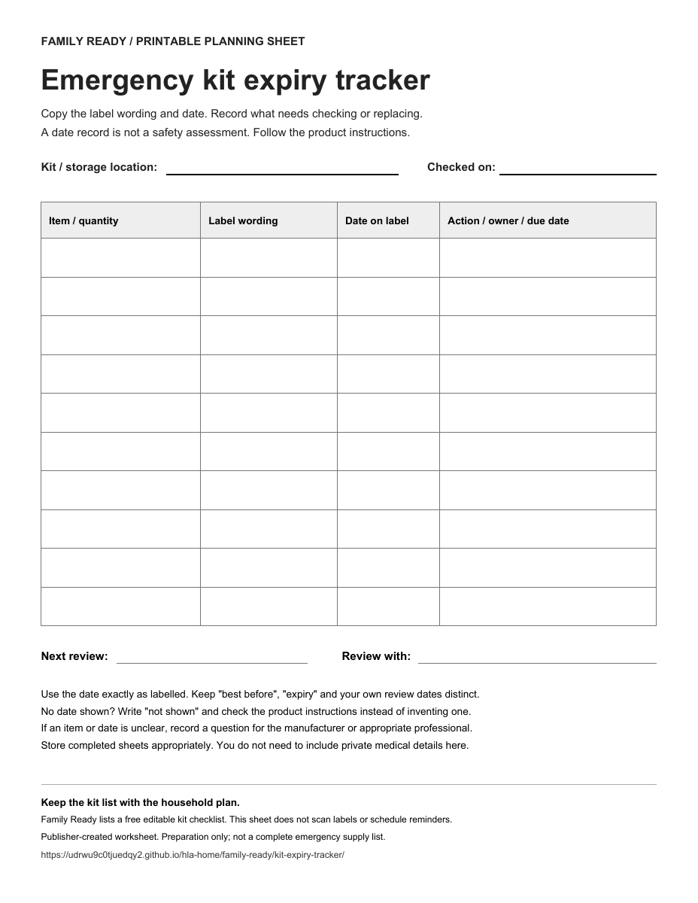
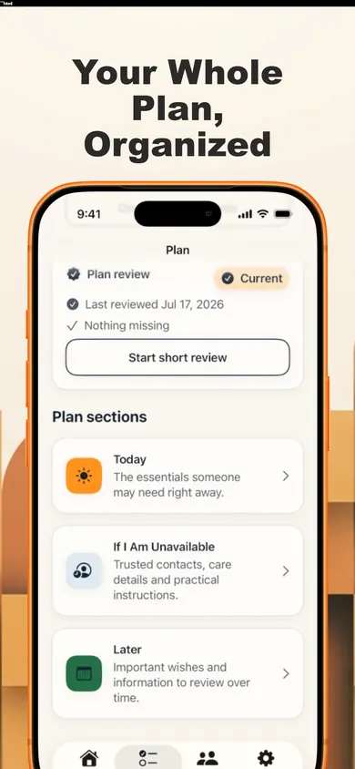

Check the label.
Write the date.
The kit is packed. Now keep track of what needs another look. A one-page sheet puts the item, its label and the next action in the same row.
Download the free trackerPDF · one Letter-size page · ten blank rows · no email required
Use your printer's fit-to-page option for A4.

Keep three things separate.
The label's words
Copy the wording as printed, such as “best before” or “expiry.” Don't replace it with a different description.
The label's date
Record the date exactly as shown. If a label gives only a month and year, keep that format rather than inventing a day.
Your next action
Use a separate space for checking instructions, replacing an item or asking a question. Your review deadline is not the product's expiry date.
One shelf.
One sheet.
Start there.
You don't need to inventory the whole household in one sitting. Start with the kit or container you can review now.
- Write where this kit is kept.Mark the check date at the top so the sheet has context later.
- Read each item label.Record the item and quantity, exact date wording and date. Use “not shown” if no date is printed.
- Leave an actionable note.For an unclear label, write who will check the instructions and when. Don't treat an empty action column as a safety approval.
- Choose the next review.Keep the completed sheet with the kit records. Revisit it when items are used, replaced or household needs change.
Three easy mistakes to avoid.
“There is no date, so I should invent one.”
Write “not shown” and consult the product's instructions. A blank field doesn't tell you how long an item will remain suitable. For medical products or medications, ask an appropriate health professional about questions rather than deriving advice from this worksheet.
“All date labels mean the same thing.”
This tracker keeps the label wording alongside the date so you can preserve the distinction. It does not interpret product labels or certify whether an item can be used. Follow the applicable product instructions.
“I checked the date, so the whole kit is ready.”
This is only a maintenance record. It does not verify quantities, storage conditions, product recalls, household requirements or the completeness of an emergency plan.
Canada's emergency-kit guidance recommends checking expiry dates and using seasonal changes as a prompt to update supplies. The worksheet turns that review into a written task list; it does not replace official preparedness guidance.

Family Ready keeps more than a supply list.
The app lists a free editable kit checklist alongside an Emergency Card, household plan, offline access and a dated Emergency Snapshot PDF.
Family Ready Plus adds features including important-date reminders, guided reviews, trusted-person sharing and extra printable packs. The app listing does not promise automatic expiry scanning or verification of your supplies.
Explore Family ReadyiPhone and iPad · iOS/iPadOS 18 or later · Free with optional in-app purchases
Make the next review easier to start.
Download the blank sheet, record what the labels actually say, and keep a clear next-action list.
Get the one-page PDFNo household details are entered on this website. Store completed sheets appropriately.
Sources and scope
Government of Canada: Emergency kit checklist, especially “Managing emergency supplies and kits”; checked 4 November 2026. The worksheet design and instructions are publisher-created, not an official government form.
Family Ready App Store listing, version 1.2.0: feature and free/Plus boundaries. Optional sharing can upload selected information; review the app's privacy information before using it.